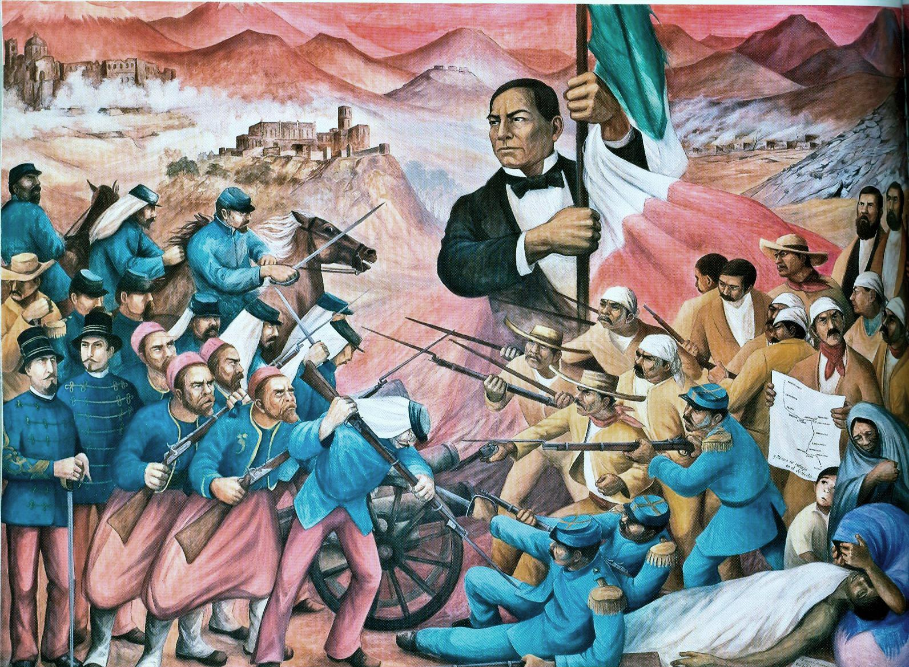

En octubre de 1861, Francia, Inglaterra y España suscribieron la Convención de Londres, en la cual se comprometieron a enviar contingentes militares a México ya que este tenía una gran deuda de 80 millones de pesos, aproximadamente eran 69 millones para los ingleses, 9 millones para los españoles y 2 millones para Francia. La alianza tripartita amenazó al presidente Benito Juarez con una invasión inminente si no se saldaba por completo las deudas que México tenía con los tres países europeos. Juarez responde con un exhorto para lograr un arreglo amistoso, y los invitó a conferenciar. Sin embargo, sabía que había una guerra inminente y trató de proteger la Ciudad de México trasladando pertrechos y ordenó la fortificación de Puebla. Creo al Ejército de Oriente y el hombre que se designó en el mando fue el general Ignacio Zaragoza.
El 5 de mayo a las 9:15am aparecen los franceses en el horizonte pero no es sino hasta las 11:15am cuando comienzan las hostilidades anunciándose con un cañonazo desde el Fuerte de Guadalupe y acompañado por los repiques de las campanas de la ciudad. El conde de Lorencez ordena una maniobra sorpresiva que divide a la columna francesa en dos y que da como resultado a 4,000 hombres marchando para atacar los Fuertes de Loreto y Guadalupe. Esta decisión pudo ser la causa de la derrota francesa ya que los mexicanos contaban con la ventaja en estas posiciones. El 6o. Batallón de la Guardia Nacional del Estado de Puebla, bajo el mando del entonces coronel Juan Nepomuceno Méndez, fue el primer cuerpo del Ejército de Oriente en hacer frente a los franceses, al ubicarse en la línea comprendida entre los fuertes, y rechazar su ataque.
Famoso militar mexicano quen cuando las fuerzas francesas de Napoleón III invadieron México para imponer como emperador a Maximiliano de Habsburgo, con el rango de general y al mando del Ejército de Oriente, las enfrentó en Acultzingo en la llamada Batalla de Las Cumbres de Acultzingo, el 28 de abril de 1862, siendo obligado a retroceder. Zaragoza comprendió la posición defensiva y favorable que tenía la ciudad de Puebla

El cinco de mayo de 1862, Lorencez se presenta al frente de su ejército, ante la ciudad de Puebla, con la intención de tomarla a viva fuerza; previamente, debido a las victorias que había obtenido en otras batallas en Europa, Lorencez, despreciando a su enemigo, mandó un mensaje demasiado arrogante a Napoleón III, en el cual expresaba: "Somos tan superiores a los mexicanos, en organización, en disciplina, raza, moral y refinamiento de sensibilidades, que desde este momento, al mando de nuestros 6.000 valientes soldados, ya soy el amo de México.

Hoy en dia el 5 de mayo es una celebracion para el pais, esto lo conmemoramos haciendo distintos eventos como lo son los desfiles, tambien hay museas que muestran lo ocurrido en esta fecha tan memorable para los poblanos.
Para más informacion consulta las paginas siguientes: